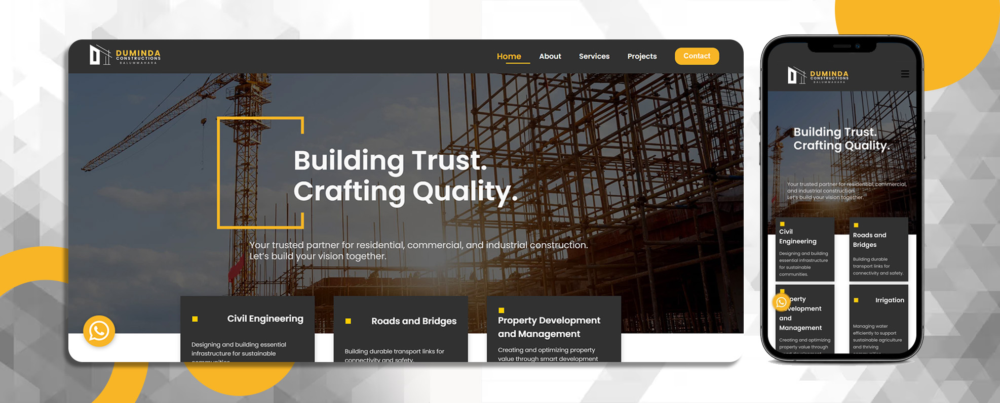
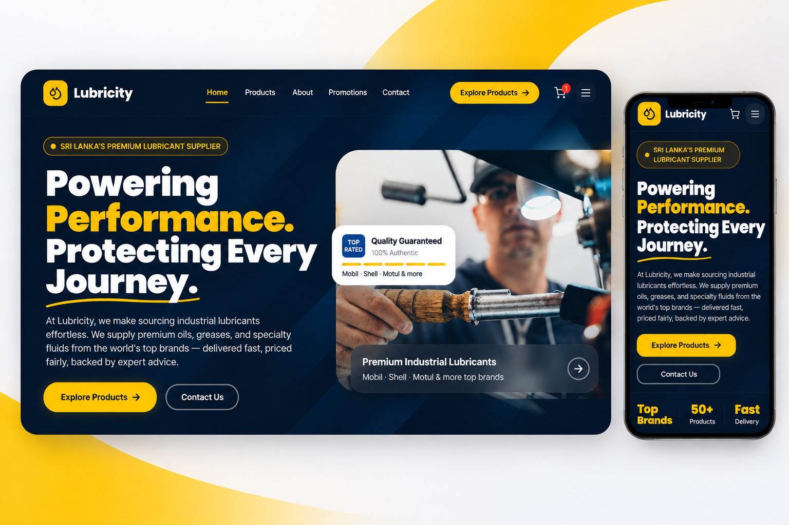
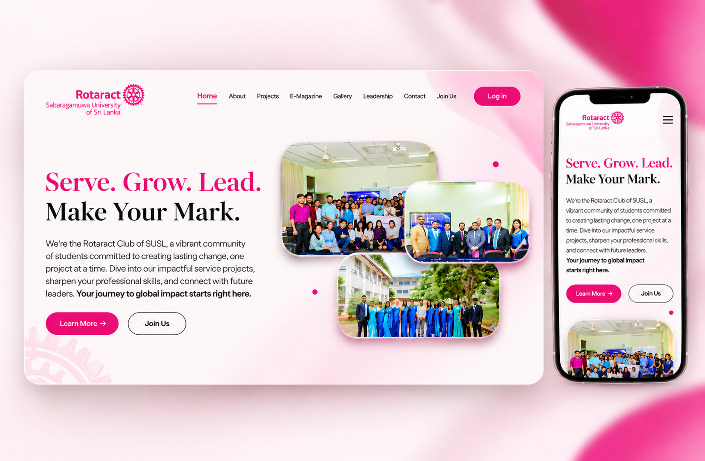
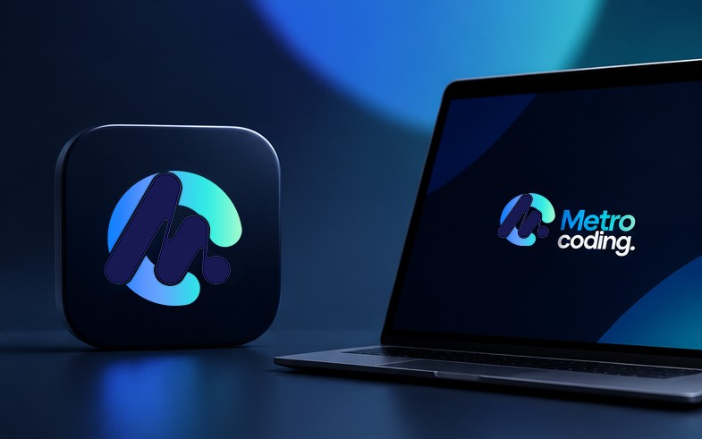
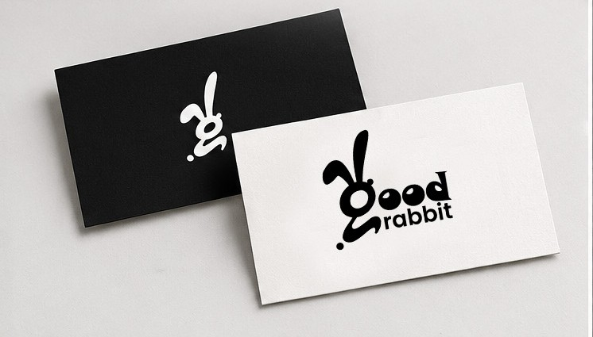
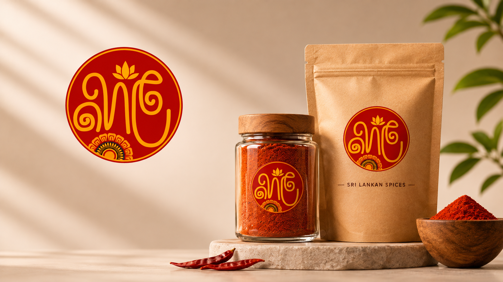

01 — WEB DESIGN Independent designer / Available for select projects
I make digital
feel different.
UI/UX and visual design for people building what’s next. I turn complex ideas into clear, thoughtful experiences.
↓SCROLL TO EXPLORE 01 — 04
DESIGN WITH
INTENTION✳︎
A LITTLE CLARITYINTENTION✳︎
GOES A LONG WAY
A LITTLE ABOUT ME 01 / 04
Good design makes
the complicated
feel natural.
I’m Sansala Dissanayake, a multidisciplinary designer working across UI/UX, web, graphic, and logo design. I turn ideas into clear, thoughtful experiences and visual identities.
More about me ↗︎SELECTED WORK 02 / 04
Ideas made
visual.
A collection of digital
and visual design.

02 — WEB DESIGN
03 — UI/UX DESIGN
04 — LOGO DESIGN
05 — LOGO DESIGN
06 — LOGO DESIGNWHAT I BRING 03 / 04
From first thought
to final feeling.
One curious mind, a few good tools, and a process that makes space for the right idea.
Digital products
Research · UX strategy · UI design · Prototyping
Visual identities
Art direction · Brand systems · Campaigns
Graphic design
Editorial · Social · Digital and print assets
IN MY TOOLKITFigmaAdobe CCFramerFigJam+ curiosity
HAVE A GOOD ONE IN MIND? 04 / 04
Let’s make
something matter.
Have a challenge, a half-formed idea, or just want to say hello? My inbox is open.
saladissanayake@gmail.com ↗︎